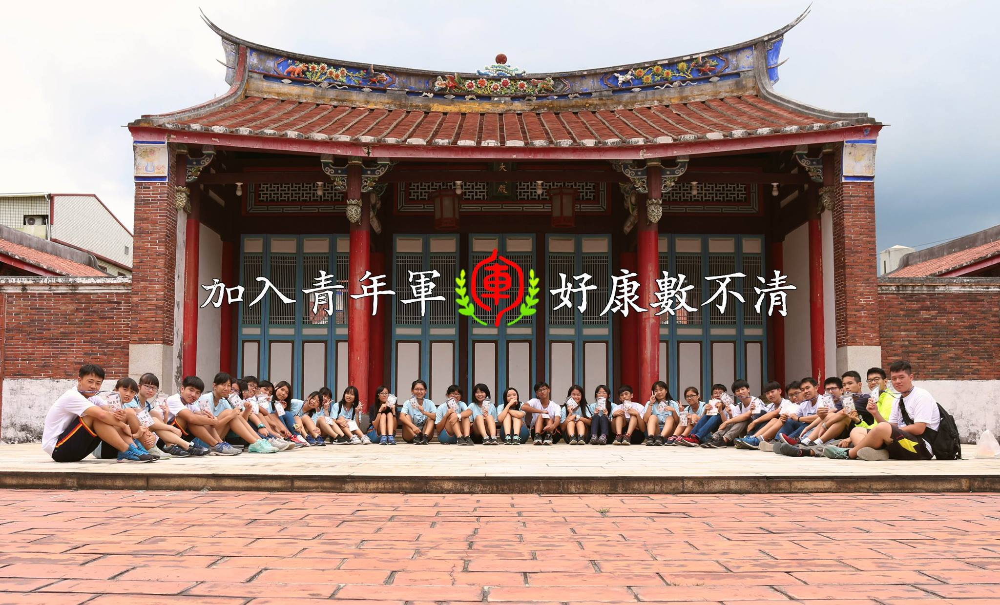

大同青年軍

大同青年軍FB粉絲專頁
[更多]
簡介：
大同青年軍是一支隸屬於屏東縣立大同高級中學的團體，迄今已有6年的歷史。由國中部的利天龍老師親自率領，主要工作內容為暑期協助國一新生的暑期輔導課程中的反轉式教育，跳脫既有的學科課程，融入校園周邊的自然、人文、地理、歷史等元素進行課程規劃，讓甫升上國一的學子們能夠透過類似於營隊的活動，藉由小組分工、田野訪查、桌遊同樂，更快適應新的環境及建立更多元的人際關係，養成健康有活力的大同新青年。
成員資格：凡就讀本校國中部畢業，或高中部以上之在校生及應屆畢業生接可參與。
須具備之能力：一雙健全的雙腳、一雙勤勞的雙手、一雙敏銳觀察的雙眼、沒有裝水泥的頭殼、一顆甘心樂意付出的心、過人的精神力 以及
一顆年輕的肝